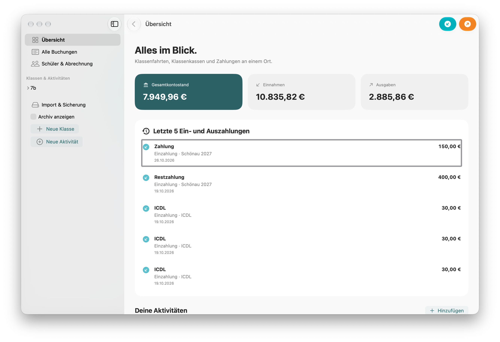

Separa i conti
Gestisci casse, viaggi e progetti in conti distinti. Consulta ogni saldo e il totale, inclusi i conti archiviati.
Con ClassCoffer controlli saldi, entrate e uscite. Assegna i pagamenti e crea rendiconti chiari su iPhone, iPad e Mac.
Saldo totale, entrate, uscite e ultimi movimenti nella schermata iniziale.

Dal singolo contributo al saldo totale: ClassCoffer unisce contabilità quotidiana e panoramica chiara.
Gestisci casse, viaggi e progetti in conti distinti. Consulta ogni saldo e il totale, inclusi i conti archiviati.
Registra entrate e uscite per singoli alunni, selezioni o gruppi. Ripartisci un pagamento tra conti al centesimo.
Versamenti, spese assegnate e credito personale sono separati. I contributi previsti mostrano quanto manca.
Crea rendiconti PDF e CSV per conti e alunni. Esporta tutti quelli di un’attività in uno ZIP.
Importa alunni da Excel, CSV o testo incollato. Crea conti e imposta un contributo previsto se necessario.
Inserisci importo, data e oggetto. Assegna il movimento agli alunni o lascialo come importo generale.
Filtra per nome, parola o nota. Crea rendiconti e salva tutti i dati in JSON.
ClassCoffer elabora i dati in locale, senza account né sincronizzazione cloud automatica.
Più informazioni sulla privacy ↗iPhone e iPad con iOS/iPadOS 17 o successivi e Mac con macOS 14 o successivi. L’interfaccia si adatta allo schermo e al tema chiaro o scuro.
Sì. Ogni classe può avere più conti o attività. La panoramica include i conti archiviati.
No. ClassCoffer registra movimenti ma non esegue bonifici né recupera operazioni bancarie.
In «Lingua» nella barra laterale. Scegli la lingua di sistema, tedesco, inglese, francese, spagnolo, italiano o olandese. La scelta viene salvata.